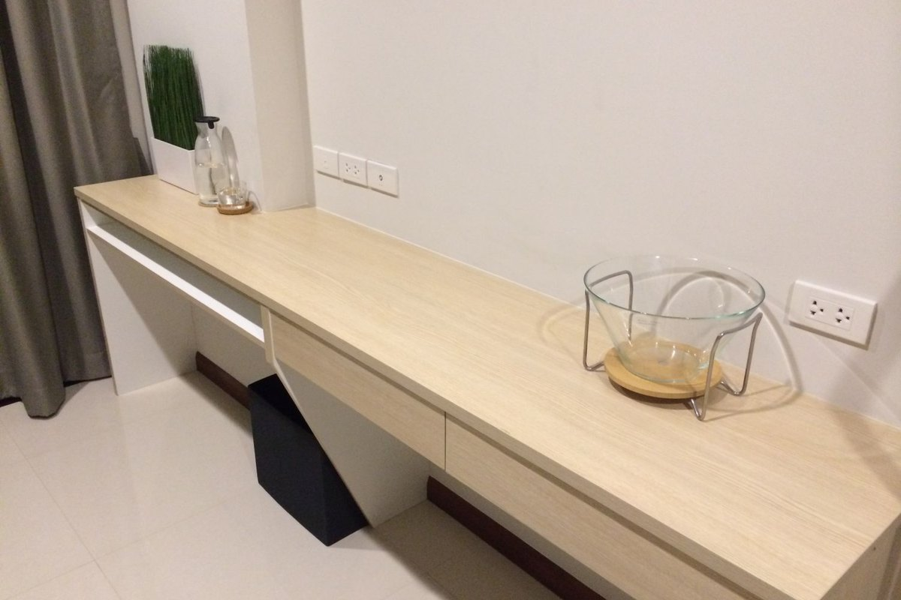
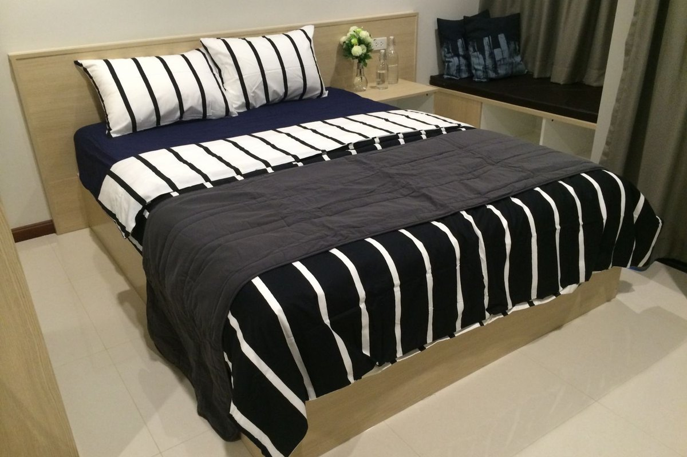
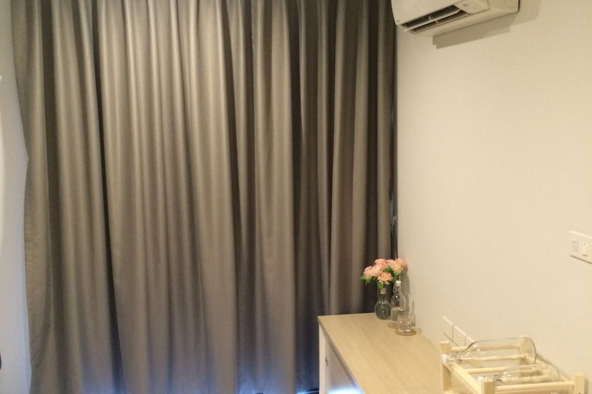
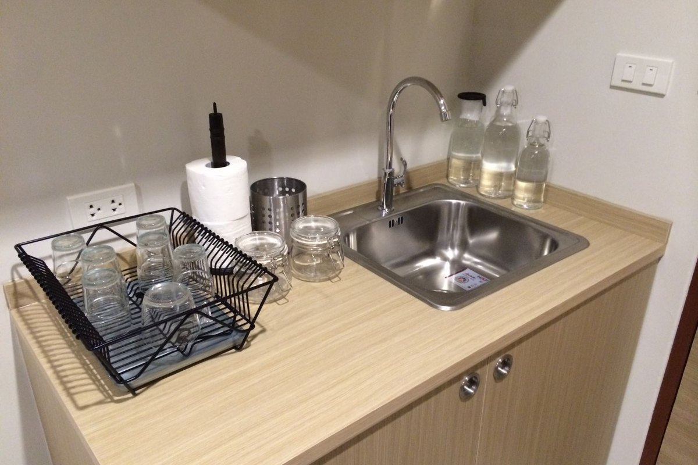
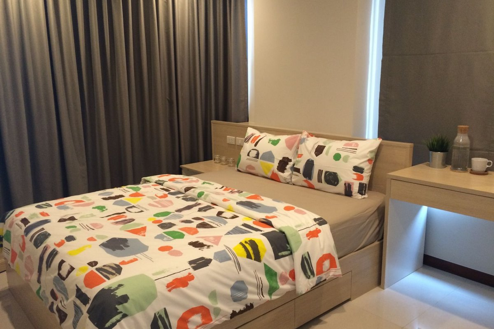
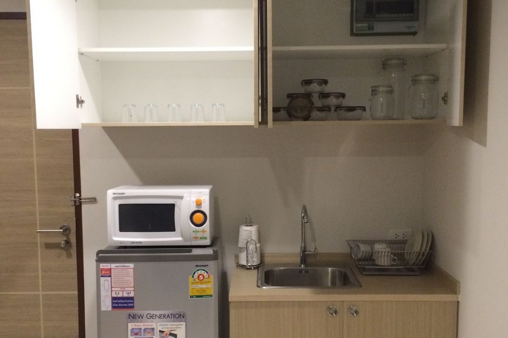

Suite · I
28 SQM
The Atelier
A studio for the solitary writer — few possessions, held dear.
From ฿ 12,500/mo
Enquire →
Tucked along the leafy quiet of Soi Phatthanakan xx, The Bed is a sanctuary for those who measure home not in square metres, but in the depth of its silence and the warmth of its keepers.
The Bed is not a building one passes by. It is a place one returns to. Beyond a discreet entrance on Phatthanakan, a small world has been arranged — composed of polished concrete and warm timber, of staff who know your name, and of mornings that begin with coffee from beneath your own home.
Owned and managed with rare diligence, every corner has been kept with care. The lobby is swept, the corridors are quiet, and the courtyard fills, on certain evenings, with the soft hum of neighbours sharing a slice of pizza.


Each suite shaped around a singular idea — good living begins with what we choose to leave out. Linen, light, and silence.

A studio for the solitary writer — few possessions, held dear.

A one-bedroom with a window deep enough to sit in — mornings of light, evenings of books.

A larger residence for those who entertain quietly — a long table, an evening of pasta and conversation.
All suites include furnishing, weekly housekeeping, high-speed wifi, and full concierge service
TB TheBed Café opens its doors each morning at the foot of your stairs. A four-point-four rating from those who know coffee well.
Classy Gel — a five-star, by-appointment studio kept by an artisan who treats each hand as a small canvas.
A dedicated security team holds the building through every hour. Residents have written, simply: "safe."
Covered, ventilated parking on the lower level — a small mercy in the Bangkok sun, and a great kindness in the rains.
From the housekeeper to the manager, the people of The Bed are spoken of — in every review — with warmth: kind, polite, attentive.
On certain nights, the management hosts the residents — a long table, hot pizza, easy laughter. The Bed remembers it is a community.
A residence is best seen in the unhurried details — a doorway, a corner, a pour of light at four o'clock. Linger.

Suan Luang's quieter side — a residential lane sheltered from the noise of the city, but minutes from its centre. To the left, a row of shophouses. Across the street, a 7-Eleven. At the gate, a motorbike rank, ready before the sun.
The rooms are clean, the management is fast, the security is excellent. Truly a safe place to live — and a kind motorcycle rank waits at the front each morning.
Rooms kept clean and constantly improved. The staff — from the housekeepers to the management — are polite and genuinely caring. And there is a café right beneath the building. Five stars.
Clean rooms; management, security, housekeeping and maintenance are kind and unfailingly polite. Sheltered parking is wonderful. On occasion they host gatherings — sweets for the children, pizza for the residents — and the whole building feels warm.
Our concierge will arrange a quiet visit at the hour of your preference. You may, if you wish, conclude it at the café beneath the lobby.